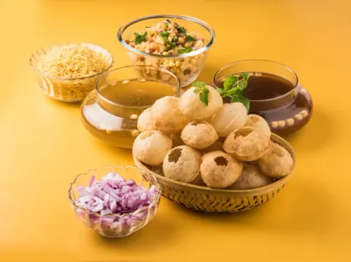

Home

This chatpata stuff u're seeing above called golgappe, yumm!
Ingredients
- Aalu
- hara paani
- meethi chatni
- dhaniya
- namak
- kuch masale
Steps
- bring some papdi
- boil some potato
- also need some salt
- make sweet chatni, and now mix those aalu with dhaniya and salt
- Now, make a hole in the papdi with u're finger or thumb
- put the masala that u make earlier in papdi
- add meethi chatni, hara paani (optional, cuz I don't drink it, usually most of the time)
golgappeeee!!